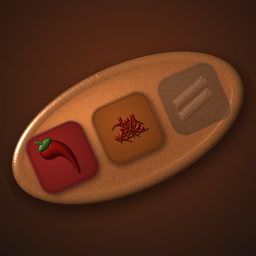

Order of Spices
Antler Studio
Order of Spices bir sıra bulmacasıdır: her müşteri tepsisinde hangi baharatları, hangi sırayla istediğini gösterir. Tahtadaki baharatları eşleştirerek tepsiyi soldan sağa, sırasıyla doldur. Oyun 300 bölüm ve baharatların vatanında geçen 10 dünyadan oluşur. (Önceki adı: Lokum Pop.)
Destek
Bir sorun mu yaşadın, öneri mi var? Bize yaz: antlerstudiogame@gmail.com
Sık sorulanlar
Satın aldığım ürün görünmüyor. Oyunda Mağaza → “Satın alımları geri yükle” düğmesine dokun. Aynı Apple ID / Google hesabıyla giriş yaptığından emin ol.
İlerlemem kayboldu. İlerleme cihazında saklanır; uygulamayı silmek ilerlemeyi de siler. “Reklamları kaldır” gibi kalıcı satın alımlar geri yüklenebilir.
Para iadesi. Ödemeler Apple veya Google tarafından alınır; iade talebini reportaproblem.apple.com veya Google Play sipariş geçmişinden yapabilirsin.
Yazarken cihaz modelini ve sorunu yaşadığın bölüm numarasını eklersen daha hızlı yardımcı oluruz.
English
Order of Spices is a sequence puzzle: each customer shows which spices they want, and in which order. Match spices on the board to fill the tray from left to right, in order. 300 levels across 10 worlds set in the homelands of spice. (Formerly Lokum Pop.)
Support: antlerstudiogame@gmail.com
Missing purchase? Open Shop → “Restore purchases” while signed in with the same Apple ID / Google account.
Refunds are handled by Apple (reportaproblem.apple.com) or Google Play.